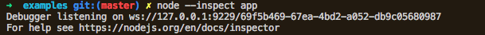
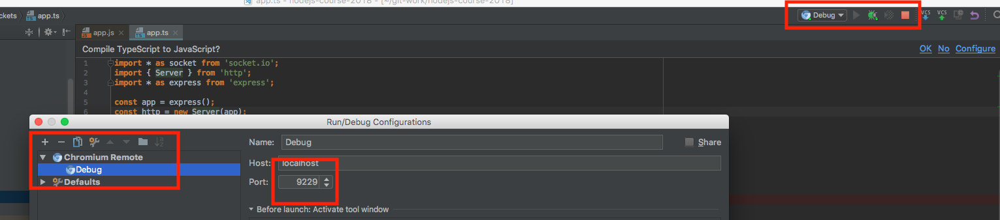
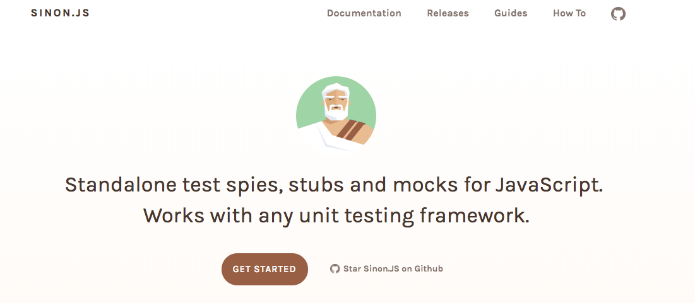

Debugging & Tests
By Nabil Naffar & Danny Vernovsky & Almog LaktiviSetting up debugger
--inspect &
--inspect-brk params allows to open TCP port to the debugger

tsconfig.json should be configured to create .ts.map files

setting up ide

testing

To test or not to test
Testing stack
- Testing framework
mocha, jasmine, jest, alsatian - Assertion library
chai, assert, expect, should - Testing support tools (coverage, mutations)
istanbul, striker
mocha testing framework
describe('test suite', () => {
before(() => {
// will happen once for suite
});
beforeEach(() => {
//will happen before every test
})
it('some test', () => {
expect(true).to.be.eq(true);
});
it('some pending test');
afterEach(() => {
// will happen once after suite
})
after(() => {
// will happen after evety test
});
});
assertion library
Chai is a BDD / TDD assertion library for node and the browser that can be delightfully paired with any javascript testing framework.
Coverage: Istanbul

Spies
Spies
A test spy is a function that records arguments, return value, the value of this and exception thrown (if any) for all its calls.
class PersistanceMock implements PersistanceInterface {
getItems = sinon.spy();
getItemById = sinon.spy();
insertItem = sinon.spy();
updateItem = sinon.spy();
deleteItem = sinon.spy();
}
Stubs
Test stubs are functions (spies) with pre-programmed behavior. They support the full test spy API in addition to methods which can be used to alter the stub’s behavior.
var callback = sinon.stub();
callback.withArgs(42).returns(1);
callback.withArgs(1).throws("TypeError");
callback(); // No return value, no exception
callback(42); // Returns 1
callback(1); // Throws TypeError
Bonus: Contract testing
Super-agent driven library for testing node.js HTTP servers using a fluent API
it('should return 401 if put was send without auth header', (done) => {
supertest(app)
.post('/api/items')
.expect(401)
.end(()=>{
done();
});
});


|
|